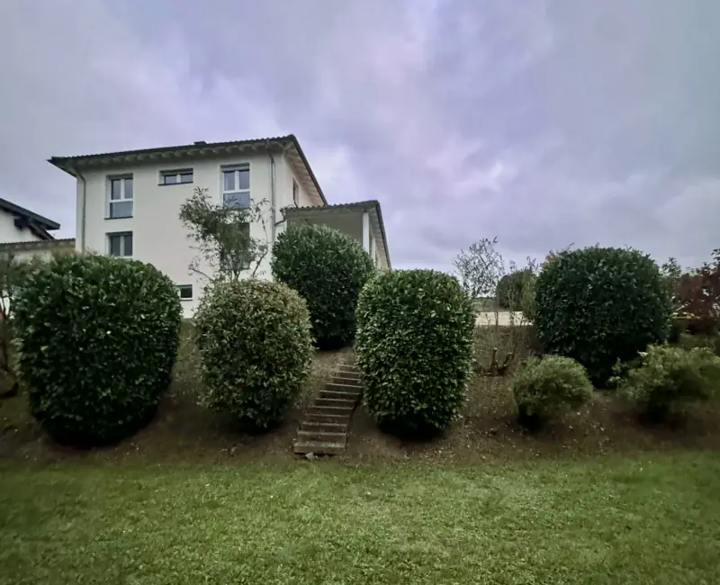
01Rasen und Boden
Mähen im festen Rhythmus, im Frühjahr vertikutieren, düngen wenn der Boden es braucht und nicht wenn der Kalender es sagt.
- Mähen
- Vertikutieren
- Düngen
- Kanten stechen
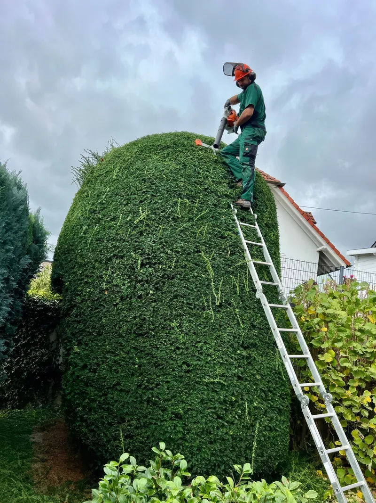
Gartenpflege Maria MD
Ich komme vorbei, sage Ihnen was es kostet, und mache es. Vom verwilderten Grundstück bis zum Beet, das gepflegt bleibt.
Ziehen Sie den Regler. Alle Bilder sind auf meinen eigenen Einsätzen entstanden, keins ist gekauft.

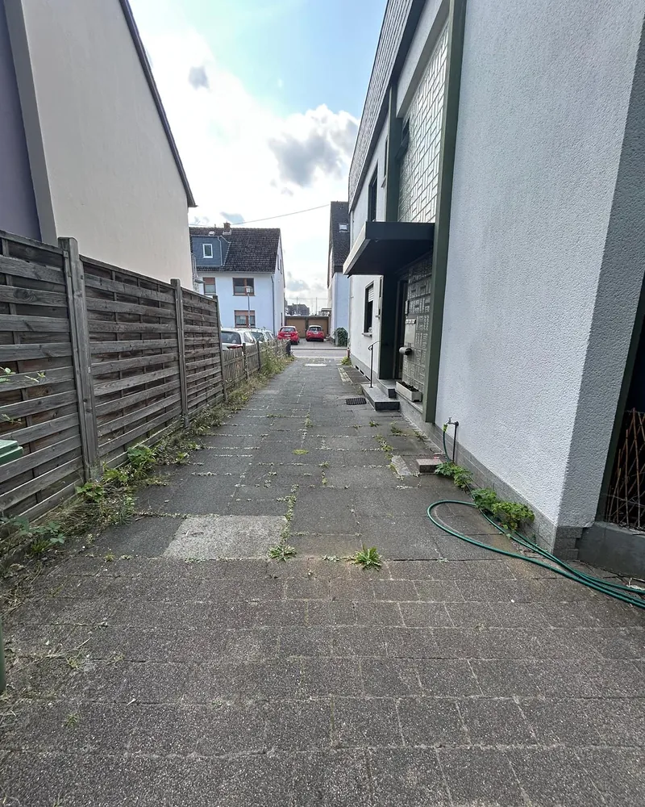
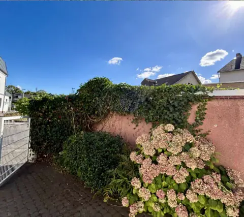
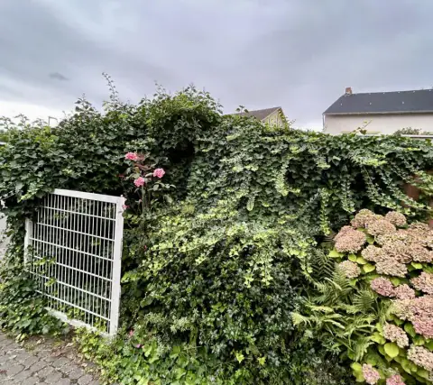
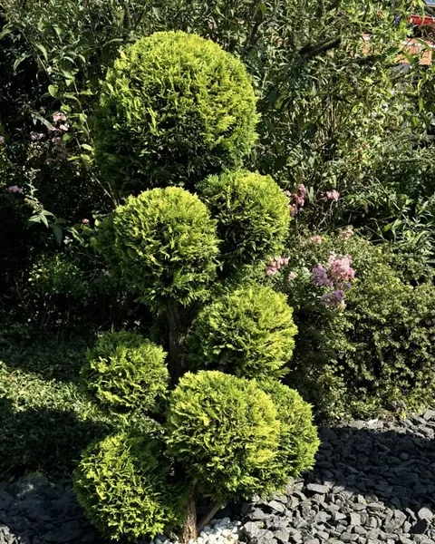
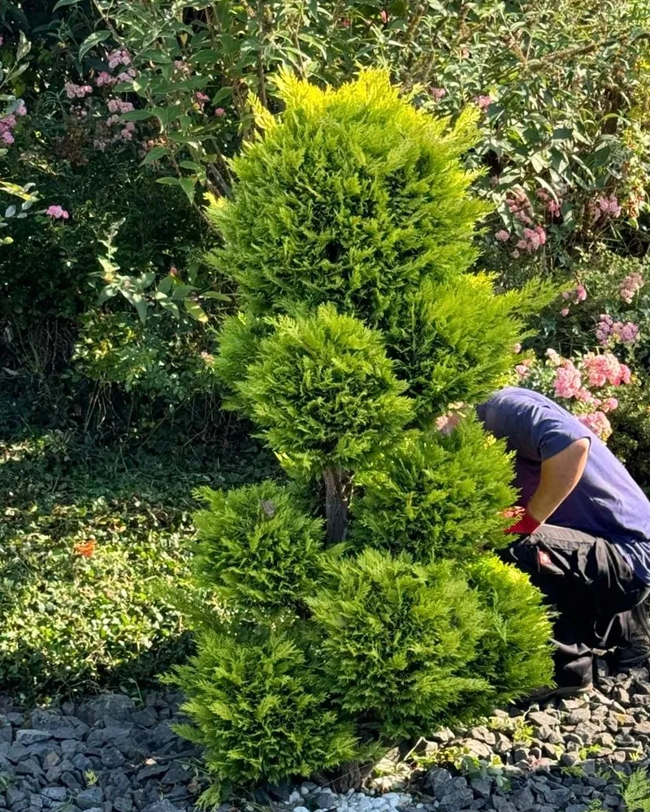


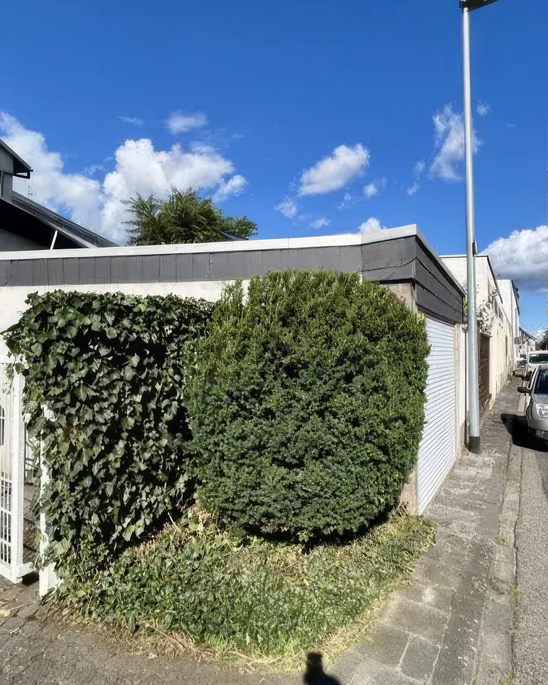
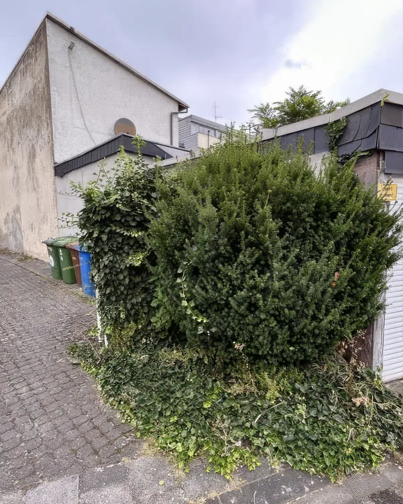


Dafür stehen sie da, weil ich sie regelmäßig mache und nicht, weil sie gut klingen.

01Mähen im festen Rhythmus, im Frühjahr vertikutieren, düngen wenn der Boden es braucht und nicht wenn der Kalender es sagt.
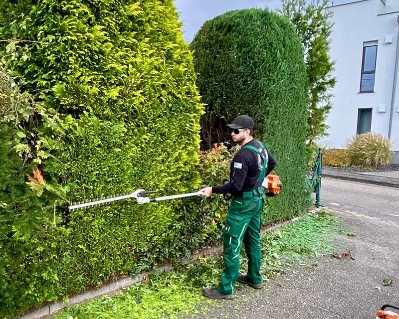
02Formschnitt an Buchs und Lorbeer, Rückschnitt an Thuja und Liguster. Auch dort, wo eine Leiter allein nicht mehr reicht.
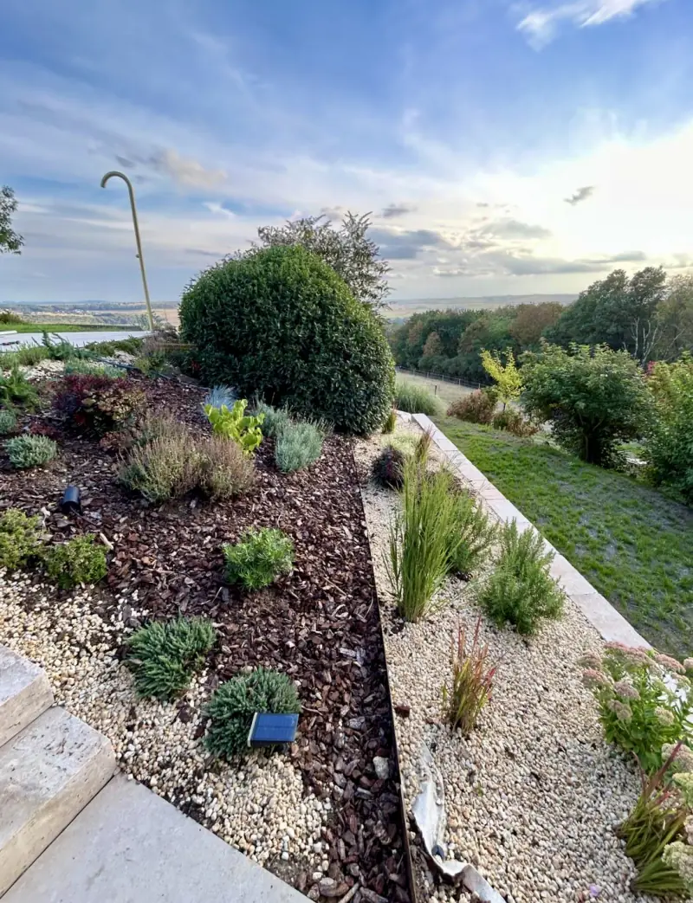
03Jäten, Vlies verlegen, Mulch und Kies aufziehen, neu bepflanzen. Die Kante zwischen den Materialien wird von Hand gezogen.
04
Fugen auskratzen, Hochdruckreiniger drüber. Danach sieht das Pflaster wieder aus wie Pflaster und nicht wie eine Wiese.
 05
05
Freischneider, wo seit Jahren niemand mehr war. Brombeere, Schilf, Jungwuchs, alles runter und weg vom Grundstück.
 06
06
Feste Termine über das Jahr verteilt. Der Grünschnitt wird mitgenommen, im Winter kommt Räumen und Streuen dazu.
Drei Bilder von derselben Stelle, aufgenommen während der Arbeit.

Alte Wurzeln raus, Fläche abziehen, dann die Pflanzen in den Töpfen auf dem Boden verteilen, bis der Plan steht.

Unkrautvlies über die ganze Fläche, überlappend, an den Rändern befestigt. Das spart später jede Woche Arbeit.

Kreuz ins Vlies schneiden, pflanzen, dann Rindenmulch und Kies. Die Kante dazwischen wird von Hand gezogen.

Mein Name ist Ion Baleca. Sie bekommen keinen wechselnden Trupp und keine Telefonzentrale: Ich schaue mir die Fläche an, sage Ihnen was gemacht werden muss und was es kostet, und stehe danach selbst mit dem Gerät da.
Das ist der Unterschied, den man an den Kanten sieht. Wer eine Fläche nur abarbeitet, zieht den Mulch bis irgendwohin. Wer sie später wieder betreut, zieht die Grenze gerade.
Mit dem Handy aufgenommen, an einem Abend, ohne Schnitt. Die Treppe, die Kiesflächen und die geschnittenen Kugeln auf diesem Video sind dieselben, die oben auf den Bildern zu sehen sind.
Ohne Ton. Sie können das Video jederzeit anhalten.
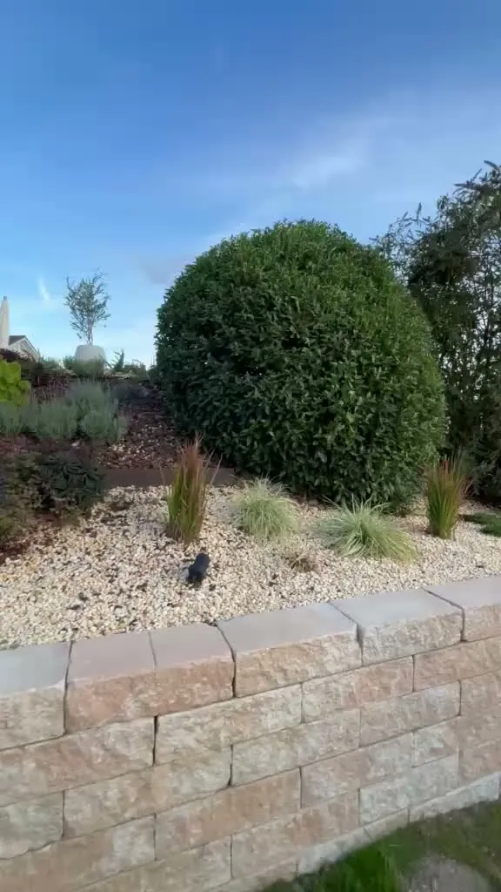
Steht Ihre Frage nicht dabei, rufen Sie einfach an. Ich gehe selbst ans Telefon.
Das hängt an der Fläche und daran, wie lange nichts gemacht wurde. Deshalb steht hier keine Preisliste, die hinterher nicht stimmt. Schicken Sie ein Foto, dann bekommen Sie eine Einschätzung, bevor jemand anrückt.
Nein. Eine Hecke, ein Hof, ein Vorgarten, das ist ein normaler Auftrag und kein Sonderfall.
Eher nicht. Die Bilder weiter oben zeigen Grundstücke, auf denen jahrelang niemand mehr war. Brombeere, Schilf und Jungwuchs sind ein Wochenendprojekt für Sie und ein Arbeitstag mit dem richtigen Gerät.
Beides ist möglich. Viele fangen mit einem einzelnen Einsatz an, weil etwas dringend ist, und machen danach feste Termine über das Jahr.
Der wird mitgenommen und entsorgt. Sie müssen nichts stapeln und nichts an die Straße stellen.
Koblenz, Neuwied, Montabaur, Mayen und die Orte dazwischen. Wenn Sie etwas weiter weg wohnen, fragen Sie einfach nach.
Ein Handyfoto reicht. Daran sehe ich schneller was zu tun ist als an drei Absätzen Beschreibung.
Handyfoto genügt. Schreiben Sie kurz, was Sie stört und wo Sie wohnen.
Sie hören, was gemacht werden muss und woran sich der Preis bemisst.
Wenn es für Sie passt, komme ich vorbei und lege los.